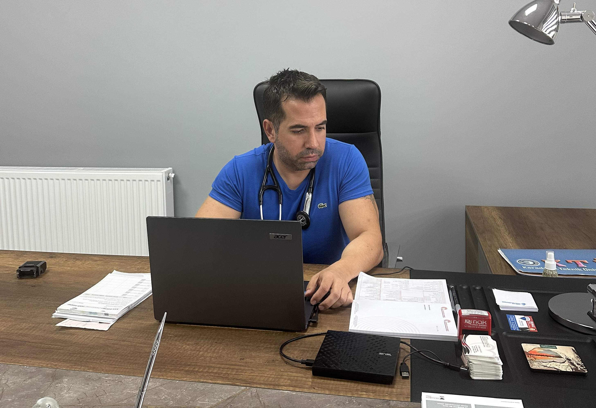
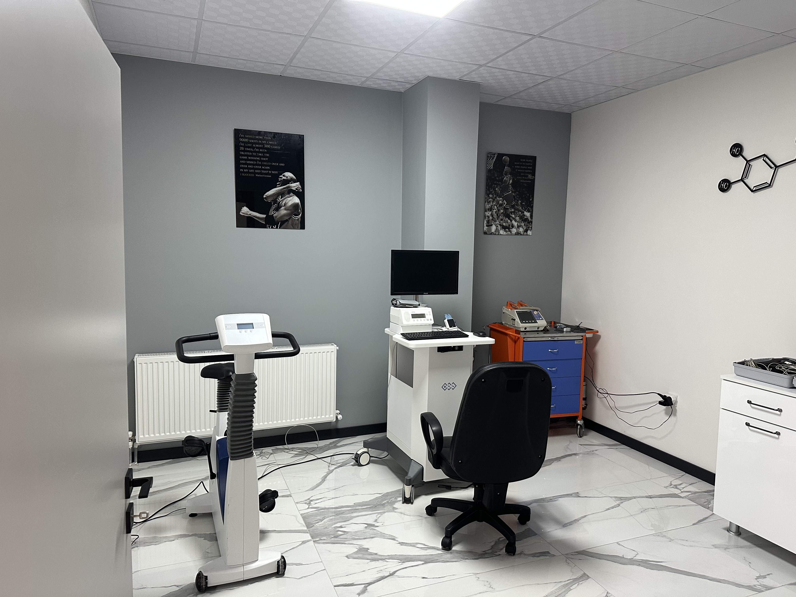

Klinik Turu
Her oda, hassas teşhis için özel olarak optimize edildi.

Uzman Görüşme
Dr. Emre Mengi ile tüm süreci detaylarıyla planlayacağınız ana merkezimiz.

Eko Ünitesi
Kalbinizin 4 boyutlu haritasını çıkardığımız yüksek sessizlikteki test odası.

Efor & Takip
Kalbinizin yük altındaki performansını ölçen gelişmiş efor laboratuvarı.
İleri Tıbbi Teknoloji
4D EKO
GE Vivid Serisi ile en derin doku analizi.
Akıllı Holter
7 güne kadar uzman destekli ritim kaydı.
IVUS / OCT
Damar içi mikroskobik görüntüleme sistemleri.
Tansiyon Takip
24 saatlik hassas ambulatuar ölçüm.